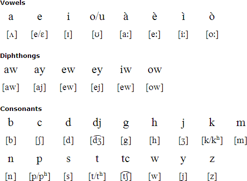
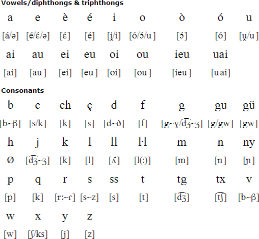
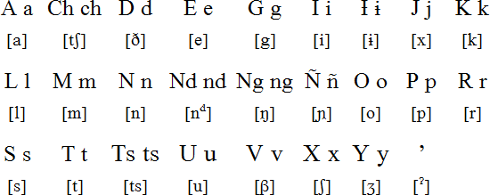

The Languages
Language is an integral component to culture. As the world continues to modernize , it is imperative that we not forget the traditional languages cherished by an ever-decreasing population. As we examine the shocking rate at which these languages are disappearing, this organization also aims to connect the public with ways to share this knowledge and ensure that all is not lost. These endangered languages exist all around the world.
Below is compiled information that highlights key points about the current selection of endangered languages
- Algonquin
- Catalan
- Mixtec
Algonquin
Interchangably referred to as Algonkian, Algonquin refers to a singular Algonquin language while Algonquinian can be understood to encompass the closely related Cree, Ojibwa, Blackfoot, Cheyenne, Mi’kmaq (Micmac), Arapaho, and Fox-Sauk-Kickapoo languages. Thhe word Algonquin is pronounced "al-GON-kee-un"
- Based on data pulled from the 2006 and 2011 Canada Census, there were only 2,680 Algonquin speakers in 2006 which decreased to 1,800 Algonquin speakers in 2011
- Algonquin belongs to the Algic Language Family
- Alphabet and pronunciation from ominglot:
- 
- Listen to the language being spoken by visiting this link!
Catalan
Catalan is a Romance Language spoken in Northeastern Spain, Southern France, Andorra, the Balearic Islands, Alghero, and Italy.
- While there are 7.3 million speakers, the Catalan Language is considered by some to be endangered as it is the minority language in some of the regions where it is used.
- Alphabet and pronunciation from ominglot:
- 
- Listen to the language being spoken by visiting this link!
Mixtec
Mixtecan dialects are part of the Otomanguean languages.
- As with many of the other Otomanguean languages, Mixtecan language can be understood through
differences in intonation and the use of complex pitches to understand the difference between words
that otherwise appear to be the same
- For example, the word "noo" is understood to have 3 different meanings when accents and pronunciation
is taken into account
- ñoó = night
- ñoo = town
- ñoo = palm
- Considering all of the Mixtec Dialects, there are thought to be around 500,000 people who speak Mixtec today
- For example, the word "noo" is understood to have 3 different meanings when accents and pronunciation
is taken into account
- Alphabet and pronunciation from ominglot:
- 
Reference: Information from Britannica